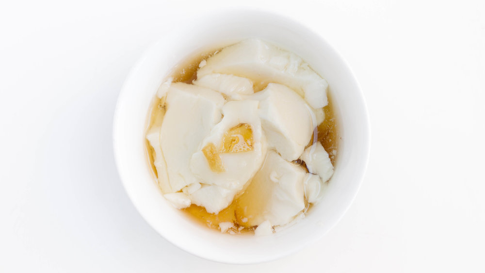

Ingredients:
- 90 g brown sugar ½ cup
- 20 ml water ½ cup
- 1 pinch salt
- 30 g ginger thinly sliced 1 oz
- 1 package tofu mix 85g, 3.03oz
- 1.2 liter water 5 cups
- In a saucepan, combine the brown sugar, water, salt and sliced ginger. Stir well and bring to a boil. Then reduce the heat to low and simmer for 5 minutes. When it is still hot, the syrup is a bit watery, but after cooling down or chilled, it becomes thicker.
- The tofu mix package includes a large soya powder pack and a small coagulant powder pack. In a large saucepan, combine the soya powder and water. Use a whisk to whisk/stir vigorously until completely dissolved.
- Bring the mixture to a boil while constantly whisking. Once it boils, reduce the heat to medium low and simmer for ~3-4 minutes. Skim off the foam.
- In a large bowl, dissolve the coagulant powder with 2 tbsp water and tilt the bowl in a circular motion to coat the bowl with the liquid. Then pour the soya mixture to the bowl through a mesh strainer to make sure no foam or lump go into it. Cover with plastic wrap or aluminium foil and let it rest for 20 minutes or until set.
- To serve, use a flat ladle, gently shave thin layer of the tofu pudding and slide it into a serving bowl. (Skim off and get rid of the excess soy water in the pudding if any.) Drizzle a few tablespoons of the ginger ginger syrup on top and serve.
|
 |